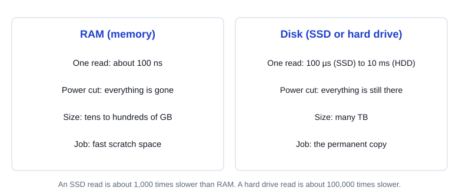
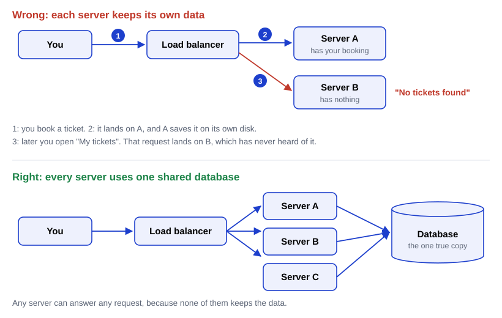
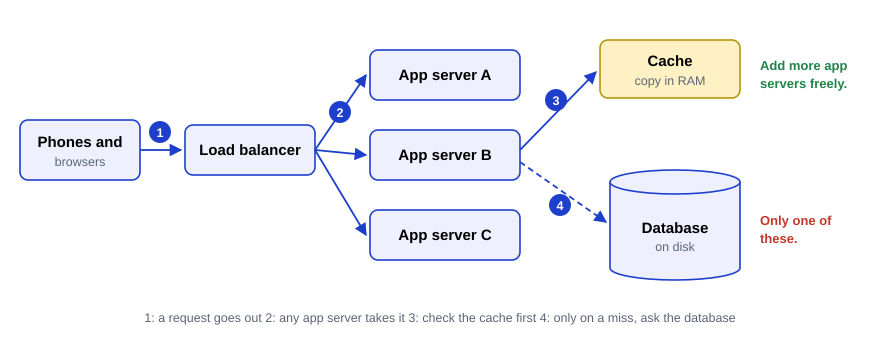
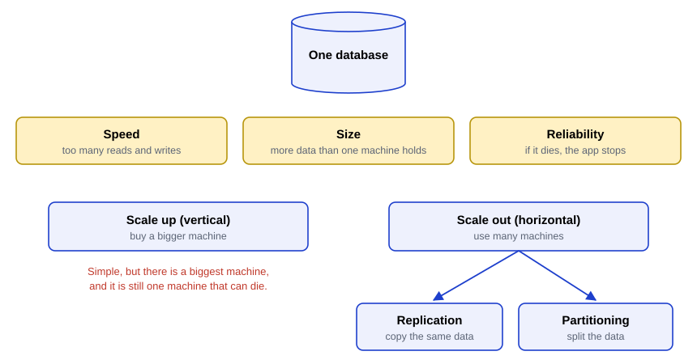
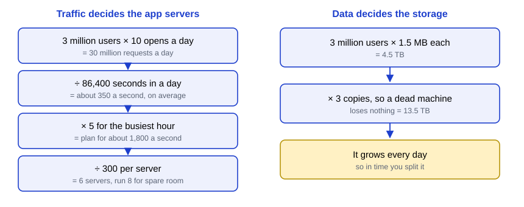

Post 1 · System Design from Zero
What is system design?
A study guide for anyone who can program but hasn't done system design. About 20 minutes. Quiz at the end, answers at the back.
5 diagrams6-question quiz
In one minute
An app has three kinds of parts. Phones and browsers ask for things. Servers run your code and answer. A database keeps the data on a disk, so it survives a power cut.
You can add servers easily, because they keep nothing that has to last. You can't do that with the database. It holds the data, and at first there is only one of it.
So as an app grows, the database becomes the part that limits everything. Most of system design is about making that one database faster, copying it, and splitting it.
The problem
Picture a small movie-ticket app. It runs on one computer. That computer runs the code, and it also stores every booking. With 100 users, this is fine.
Then 3 million people start using it. One computer can't answer them all, so pages hang until the browser gives up. That is called a timeout.
Then the computer restarts after a power cut. Nobody can book anything until it's back. If its disk had broken instead, every booking would be gone for good.
Two problems, then. Too many requests for one machine. And one machine that can fail.
System design is arranging many machines so huge numbers of users can store and fetch data fast, without losing it.
The picture: a bank
- Customers are the phones and browsers. They ask for things.
- Tellers are the servers that run your code. Any teller can help any customer. On a busy day, the bank opens more counters.
- The vault is the database. Tellers don't keep your money in their desk. They walk to the vault. That's why it doesn't matter which teller you get.
- A whiteboard on each desk is RAM, the computer's working memory. It's quick to write on, but it gets wiped every night.
- The ledger books in the vault are the disk. Slower to reach, but they stay.
Where the picture breaks: a bank has one vault. A big app ends up needing many vaults. Some are copies, in case one burns down. Others each hold part of the money, because one vault can't keep up.
How it works
Step 1: a client asks, a server answers
Your phone asks for something, such as "show my tickets". Any program that asks like this is a client. A browser is a client too.
A server is a computer that waits for requests and sends back answers. A server that runs your app's own code for each request is an application server. Big apps keep their servers in a data center: a building full of machines in racks, sharing power, cooling and network cables.
Step 1b: the rules they share
Both sides follow the same rules, or they couldn't understand each other. A shared set of rules for a conversation between programs is a protocol.
The web's protocol is HTTP, short for HyperText Transfer Protocol. Every HTTP request starts with a verb. The verb GET means "fetch this". So GET /tickets asks for your tickets.
A server accepts a fixed list of requests like that, each with a set meaning and a set kind of answer. That list is the server's API (application programming interface).
Step 2: decide what kind of storage holds the data
Every computer has two places to keep data, and they are good at opposite things.

RAM is where a running program keeps its working data. One read takes about 100 nanoseconds. A nanosecond is a billionth of a second. But RAM forgets everything when the power goes.
A disk keeps data with the power off. There are two kinds:
- A hard drive (HDD) spins metal plates and moves a tiny arm over them. One read takes about 10 milliseconds. A millisecond is a thousandth of a second.
- An SSD (solid-state drive) uses chips with no moving parts. One read takes about 100 microseconds. A microsecond is a millionth of a second.
A ticket must never vanish because the power flickered. So the permanent copy of the data lives on disk. RAM is fast scratch space. Disks are slow, and that slowness shapes how databases store data. The next part of the series starts there.
A small detail: the processor doesn't do its maths in RAM itself. It copies values into a few tiny slots on the chip, called registers, and works there.
Step 3: decide which computer holds the data
Say you run three application servers: A, B and C. Something has to choose which one gets each request. A machine that spreads requests across servers, so none is overloaded, is a load balancer.
Now the tempting mistake: let each server keep its own data.

- You book a ticket. The load balancer sends it to A, and A saves it on its own disk.
- Later you open "My tickets". This time the request goes to B.
- B has never seen your booking. It says "No tickets found".
The fix is to take the data off the servers. Put it on one separate machine that every server talks to: the database. Now the database is the single source of truth, the one place whose answer counts.
A server that keeps no data that has to last is called stateless. Even who is logged in lives somewhere else. Stateless servers are easy to add. When traffic doubles, start more of them.
Many requests never reach the database at all. A short-lived copy of popular data is kept in RAM, on the app servers or on a separate cache machine. That copy is a cache. When the cache doesn't have what you need, that's a miss, and only then does the server ask the database.

How much work a machine can handle before it slows down is its capacity. App servers often run out of capacity first. But that's the easy limit to lift: add more. The database is the limit that stays.
Step 4: the database becomes the bottleneck
The one part that limits how fast the whole system can go is the bottleneck. Think of a bottle: however wide it is, water only pours as fast as the neck allows.
You can't just start ten copies of the database and hope. Without something keeping them in step, each copy would get different writes. One would have your booking and another wouldn't, and users would see different answers. The database is the state: the data that has to last, all in one place.
Three pressures hit that one database as the app grows:
- Speed: too many reads and writes each second.
- Size: more data than one machine can hold.
- Reliability: if it dies, the whole app stops.
One part whose failure stops everything is a single point of failure. A lone database is one.
Step 4b: two ways to grow

There are two ways to grow:
- Vertical scaling (scale up): buy a bigger machine. Simple. But there is a biggest machine you can buy, and it can still die.
- Horizontal scaling (scale out): use many ordinary machines. No one-machine ceiling. But the machines must send each other messages to agree on who holds what, and which copy is up to date. Messages take time, and they can get lost when a machine or the network fails. That agreeing is where most of the hard problems come from.
Scaling out the data comes in two kinds:
- Replication keeps copies of the same data on several machines. If one dies, another takes over. Copies can also share the reads.
- Partitioning splits the data so each machine holds only part. For example, users A to M on one machine and N to Z on another. Partitioning is also called sharding.
Keeping working when some parts fail is called fault tolerance. For data, replication is the main way to get it.
Step 5: the goals
Almost every technique in this series tries to give you one of three things:
- fast reads,
- fast writes,
- reliability: no lost data, no downtime when a machine fails.
And every technique pays for its gain somewhere else.
"Fast" has two meanings. Latency is how long one request takes, from asking to getting the answer. The second meaning is throughput. It is how much work gets done each second. They differ. A bus that leaves once an hour with 50 people moves more people per hour than a taxi. So its throughput is higher. But you may wait an hour for it, so its latency is worse.
Worked example: sizing the ticket app
Our app has 3 million users a day. Each opens it about 10 times, and each open is one request.

Requests per second. A day has 24 × 60 × 60 = 86,400 seconds.
3,000,000 users × 10 requests = 30,000,000 requests a day 30,000,000 ÷ 86,400 seconds ≈ 347, so about 350 requests a second
That is the average, and you never size machines for the average. The busiest hour of the day is the peak, and it is often 2 to 3 times the average. Planners add a safety margin, so plan for 5 times:
350 × 5 = 1,750, so plan for about 1,800 requests a second
How many servers. Say one app server handles 300 requests a second for this app.
1,800 ÷ 300 = 6 app servers at peak. Run 8.
The 2 extra are headroom: spare room for a surprise spike, or for a server that dies.
How much storage. Say each user's data, tickets plus a profile photo, takes 1.5 MB. A terabyte (TB) is a million megabytes (MB).
3,000,000 users × 1.5 MB = 4,500,000 MB = 4.5 TB 4.5 TB × 3 copies = 13.5 TB stored
Splitting the data doesn't protect it: if a machine holding part of it dies, that part is gone. That's why you keep copies as well. Why 3 copies, not 2? Replacing a dead machine takes hours. With 2 copies, one failure leaves you a single copy, and one more failure loses data for good. With 3, one failure still leaves two.
4.5 TB fits on one machine today. Size isn't the issue yet. Growth and write load are: new data arrives every day, and one machine can only take so many writes. That's why big apps end up splitting the data.
Why not keep it all in RAM? A power cut would erase it. RAM is also far smaller and costs far more per GB than disk: 13.5 TB won't fit in one server's RAM. The price of disk is speed:
SSD vs RAM: 100 µs ÷ 100 ns = 100,000 ns ÷ 100 ns = 1,000 times slower hard drive vs RAM: 10 ms ÷ 100 ns = 10,000,000 ns ÷ 100 ns = 100,000 times slower
What it costs
| A separate database buys you | any server can answer any user, and you can add servers freely |
| It costs you | a network trip to the database for every request the cache can't answer, and the database becomes the limit |
| Scaling up | simple, but has a ceiling and is still one machine that can fail |
| Scaling out | no one-machine ceiling, and survives failures if data is copied, but machines must agree, and copies can disagree |
How copies disagree: you rename your saved list. Copy 1 gets the change now. Copy 2 gets it a moment later. For that moment, anyone reading copy 2 sees the old name. If copy 2's machine was down, it misses the change until it catches up. In some setups, a change can be lost for good. Deciding what happens then is the seed of most of this series.
When to use it, and when not
Split into app servers plus one database when:
- more than one server will handle requests,
- the data must outlive any one server,
- or traffic goes up and down.
Stay on one machine when it handles your load with room to spare. A short outage must also be fine, like for an internal tool used by ten people.
Mistakes people make
"More servers always make the site faster." Only if the servers are the bottleneck. If every request waits on one overloaded database, more servers just wait too.
"It's on disk, so it's safe." A disk survives a power cut. But disks break, and so do whole machines. Real safety needs copies on other machines.
"Databases don't use RAM." They use lots of it, for recently used data and for lookup helpers. But the copy that counts must end up on disk.
Words to know
- Client: the program that asks, like a phone app or browser.
- Server: a computer that waits for requests and answers.
- Application server: a server that runs your app's code for each request.
- Data center: a building full of servers in racks.
- Protocol: shared rules for a conversation between programs. HTTP is the web's protocol, and its verb GET means "fetch this".
- API: the list of requests a server accepts, and what each returns.
- RAM: fast memory that forgets everything when the power goes.
- Disk (HDD or SSD): slower storage that keeps data with the power off.
- Register: a tiny slot on the processor where it does its maths.
- Load balancer: spreads requests across servers.
- Single source of truth: the one place whose data counts.
- Stateless: keeps nothing that has to last, so any copy can answer any request.
- Cache: a short-lived copy of popular data, usually in RAM. A miss means it doesn't have what you asked for.
- Capacity: how much work a machine can take before it slows down.
- Bottleneck: the one part that limits the whole system.
- Single point of failure: one part whose failure stops everything.
- Vertical / horizontal scaling: one bigger machine / many machines.
- Replication: copies of the same data on several machines.
- Partitioning (sharding): each machine holds part of the data.
- Fault tolerance: keeps working when some parts fail.
- Latency: how long one request takes. Throughput: how much gets done per second.
- Peak: the busiest hour. Headroom: spare capacity on top.
Say it in an interview
Quiz
Answer each one in your own words, then check. Your marks stay in this browser.
Answer
The load balancer sent the save to one server, say A, which wrote it to its own disk. The next request went to another server, say C, which has never seen it. The data lived on one server, so it depended on which server you reached.
Answer
App servers are stateless: they keep nothing that has to last, so any copy can answer. The database holds the data itself. Copies of it would get different writes and give different answers, unless something keeps them in agreement.
Answer
1,200,000 × 18 = 21,600,000 a day. 21,600,000 ÷ 86,400 = 250 a second on average. At peak, 250 × 5 = 1,250 a second.
Answer
1,250 ÷ 400 = 3.1, so 4 servers at peak, plus headroom, say 5 or 6.
Answer
Speed: partitioning splits the work across machines, and replication adds copies that can share reads. Size: partitioning, since each machine holds part. Reliability: replication, since a copy takes over when a machine dies.
Answer
The bus has better throughput: it moves 50 people per trip. The taxi has better latency: you leave almost at once instead of waiting up to an hour.